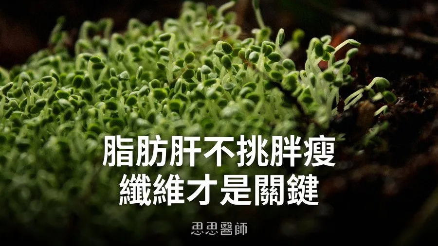

脂肪肝不挑胖瘦，纖維才是關鍵

台灣的脂肪肝其實比大家想像的普遍。根據衛福部的統計，台灣成人脂肪肝的盛行率高達33.3%，等於每三個成年人就有一個肝臟裡囤積過多脂肪，而脂肪肝進一步惡化成肝纖維化、肝硬化，甚至演變成肝癌。
一聽到脂肪肝，很多人第一個反應是少吃油、少吃澤，但我在門診觀察到，能讓肝臟超音波報告從「輕度脂肪肝」變成「正常」的病人，除了少吃糖以外，我往往還會給一個飲食建議：多吃膳食纖維。
這聽起來有點反直覺。脂肪肝是肝細胞囤積過多脂肪，跟「吃進去的纖維」感覺是兩件不相干的事。但膳食纖維在大腸被細菌發酵後，會產生短鏈脂肪酸，這些代謝產物能提升胰島素敏感度、減少肝臟從腸道吸收的脂肪酸原料，等於從源頭降低肝臟合成與囤積脂肪的壓力。一項為期八週試驗，讓脂肪肝患者每天額外補充12克或24克的纖維，結果兩組都看到代謝指標改善：補充12克纖維的那一組，肝臟脂肪堆積和體重明顯下降；補充到24克的那一組，則在總膽固醇和肝功能指數AST上看到更明顯的改善。這代表纖維對脂肪肝不是「可能有關」，而是從不同角度都確實能幫上忙。
更值得注意的是，脂肪肝從來不是胖子的專利。我在診間看過不少BMI正常、甚至偏瘦的病人，超音波一照，肝臟脂肪含量照樣超標。這不是個案。研究發現，亞洲地區的脂肪肝患者裡，有11.7%其實是體重正常甚至偏瘦的「瘦子型脂肪肝」；北美地區這個比例更高，接近四成五。換句話說，決定你會不會有脂肪肝的，不是體重計上的數字，而是你內臟脂肪的囤積方式。
如果纖維對脂肪肝這麼重要，接下來的問題就是：有沒有一種纖維來源，能給得比一般蔬果更多？這就是我一直以來推薦青花椰苗的原因。青花椰苗除了本身含有膳食纖維之外，還擁有一個其他高纖食物沒有的成分：蘿蔔硫素（Sulforaphane）。蘿蔔硫素是十字花科幼苗裡的硫化物前驅物經過酶解後產生的活性成分，青花椰苗的含量又是成熟青花菜的數十倍，等於用很小的份量就能攝取到濃縮的劑量。
蘿蔔硫素對肝臟的幫助，走的是它能活化體內的Nrf2抗氧化防禦系統，這套系統負責啟動肝臟裡一整組解毒酶與抗氧化酶，幫助肝細胞處理代謝過程中產生的氧化壓力，而氧化壓力正是脂肪肝走向發炎、纖維化的推手之一。一項針對男性受試者的隨機對照試驗發現，連續攝取濃縮蘿蔔硫素萃取物八週後，受試者的肝功能指數ALT、γ-GTP都顯著下降，顯示蘿蔔硫素確實能從減少氧化壓力的角度，幫肝臟多做一層防護。
我會說青花椰苗是「功能性纖維」：是因為一般蔬果給你的是纖維本身的發酵與短鏈脂肪酸效益，青花椰苗則是在同樣的纖維基礎上，多疊了一層蘿蔔硫素的抗氧化保護，對已經有脂肪肝困擾，或是想預防脂肪肝找上門的人來說，等於是用同一份食材，同時照顧到兩個機轉。
青花椰苗不是藥，不會讓脂肪肝一夜消失，但把它放進日常飲食裡，作為脂肪肝的長期保養，是一個有機轉支持、而且門檻很低的選擇。如果你的健檢報告上寫著「脂肪肝」，不管你照鏡子覺得自己胖或瘦，纖維攝取量都值得認真嘗試，而青花椰苗，可以是你讓這件事變得更輕鬆簡單。
參考資料
（本文由我規劃架構與觀點，並協同 AI 校正與潤飾語句）
好朋友早餐信
一週一封：《健康駭客週報》這集的研究重點，加上家醫專欄這週的新文章。免費，隨時可以退訂。